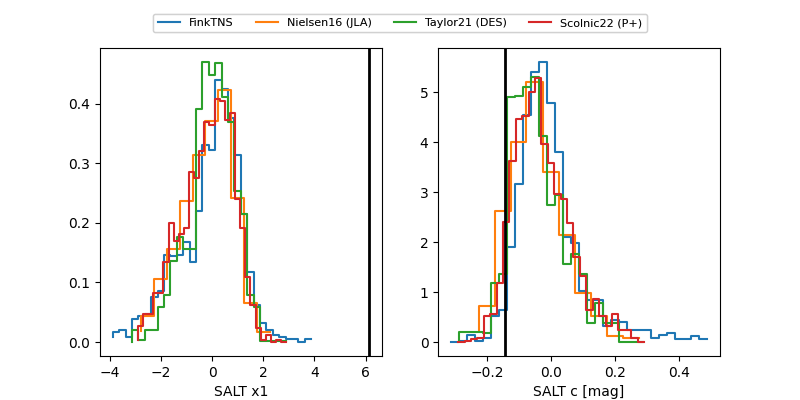

2025aeuq
Target 2025aeuq at 2025-12-20 11:59
Aliases and brokers:
FINK: fink-portal.org/ZTF25aceeppc
Lasair: lasair-ztf.lsst.ac.uk/objects/ZTF25aceeppc
ALeRCE: alerce.online/object/ZTF25aceeppc
TNS: wis-tns.org/object/2025aeuq
YSE: ziggy.ucolick.org/yse/transient_detail/2025aeuq
alt names
ZTF25aceeppc (ztf,fink_ztf)
2025aeuq (tns,yse)
ATLAS25ovz (atlas)
Coordinates:
equatorial (ra, dec) = 121.8924,+47.94351
equatorial (HMS+DMS) = 08:07:34.18,+47:56:36.65
galactic (l, b) = (171.3839,+32.20697)
Flags:
Photometry:
last atlasc=18.92, atlaso=18.61, ztfg=18.55, ztfr=18.45
1 atlasc, 6 atlaso, 3 ztfg, 5 ztfr detections
Lightcurve

Visibility


Additional plots
